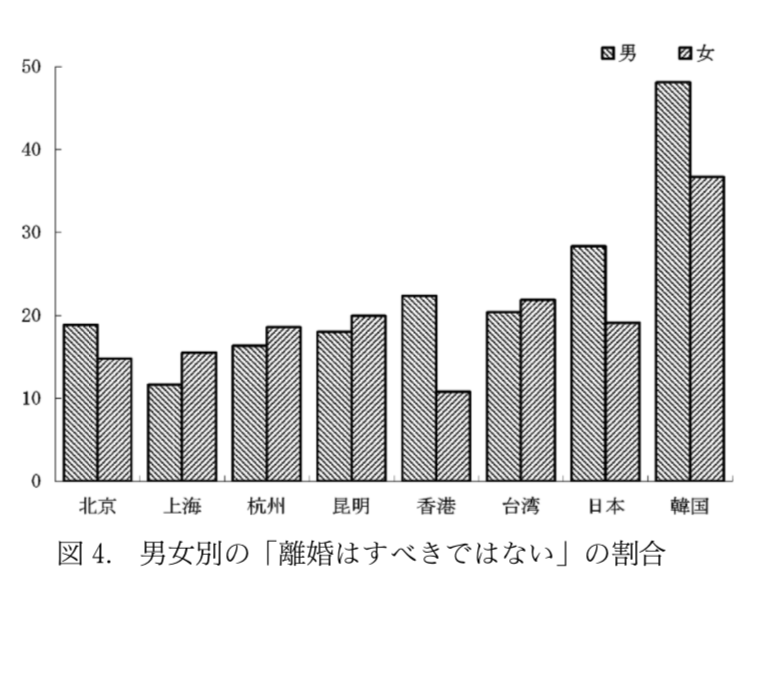

グループで出た疑問 片親の子どもは片親になるのか
海外の離婚観
親の行動・家庭環境がその後の子どもの成長に与える影響 -The Sensitivity Analysis of Hidden Bias-」坂本和靖 (財団法人家計経済研究所研究員、 一橋大学経済研究所 Hi-Stat COE 特別研究員) 2008年3月
低所得階層の子どもは少ない人的資本投資しかされないず、成人した時、貧しくなる傾向がる。また彼ら自身の稼ぎが少ない場合、結婚市場において魅力的に見えにくく、生産性の低い相手としか結婚できない、結婚もできないことが多い。さらに低所得階層下にいる女性はシングルマザーになりやすく、その結果子どもの人的資本投資も小さくなり「負の連鎖」が発生しやすい状況になる。
やはり片親の子供も片親になりやすくループから抜け出すのは難しいかもしれない....
東アジア諸国の伝統的価値観の変換に関する計量分析 鄭 躍軍 行動計量学 第32巻第2号 2005年
>
韓国、台湾においては、家庭を大切にし、離婚をできるだけ避けるべきだと考えている人が多い。一方、中国本土、香港は安定した家庭を求める傾向が弱まっており、理由として経済改革政策を遂行した1980年代以降、離婚による社会的影響が小さくなり都心部を中心に離婚率が増加したことがつながっていると考えられる。
4人に1人が独身時代、日本と海外の結婚観の違いとは フランスやスウェーデンでは5割以上が婚外子 上野陽子 日経doors 2018年3月20日
フランス人は結婚しないままパートナーとの間に子どもを作ることも多く、今では婚外子の割合も半数を越えており、結婚をしなくても、一緒に生活するパートナーが亡くなったときなど、法律的に結婚に近い権利を認めてもらえる制度がある。（PACS）スウェーデンも婚外子の割合が5割超であり、フランスと同様「サムボ」と呼ばれる制度がある。つまり フランスでは、結婚とは古い制度であり、パートナーとの関係において結婚が最終的な目標ではない、といった考え方が一般化している。
韓国、台湾は離婚について日本と同様の考えを持つ人が多くいるが、フランス、スウェーデンではそもそも結婚に対する考え方が根本的に違い、離婚のという概念が薄いということが興味深かった。
・親の所得によって子どもが片親になる連鎖が続く傾向がある。
・東アジアは日本と同様、離婚に対してネガティブな考えを持つ人が多い。
・フランスやスウェーデンなどはそもそも結婚の考えが違うことによって離婚の概念があまりない。
・海外の離婚についてもう少し調べる（アメリカなど）
・アンケートの内容の準備をする